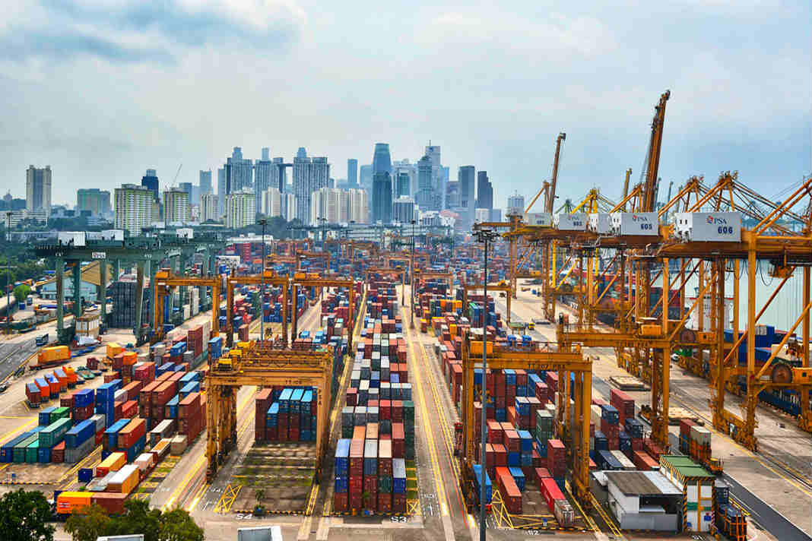

Wśród dwudziestu największych na świecie portów z terminalami kontenerowymi, co czwarty zanotował w 2015 roku spadek przeładunków. Jednak większość poprawiła z roku na rok wolumen obrotów, co wpłynęło też na kilka zmian pozycji na takiej liście - wynika z danych, opublikowanych przez brytyjską spółkę analityczną Alphaliner.
Na pierwszym miejscu umocnił się Szanghaj, gdzie przeładowano 36,5 mln TEU drobnicy, o 3,5 proc. więcej niż w 2014 roku. Drugie miejsce obronił Singapur (30,9 mln TEU), ale zaliczył jeden z największych spadków obrotów spośród największych portów – aż o 8,7 proc., a trzecie Shenzhen (24,2 mln TEU, +0,7 proc.). W pierwszej dziesiątce największych portów zaszła jedna zmiana – na 10 miejsce wskoczył Los Angeles (15,4 mln TEU).
Największe europejskie porty z terminalami kontenerowymi nadal spadają na listach Top 20. Rotterdam, z powodu 0,5 proc. spadku przeładunków, znalazł się na 12 miejscu (w ub. roku – 11, cztery lata temu – 10). Także z powodu dużego spadku obrotów (-9,3 proc.), port Hamburg spadł z 15 pozycji w ub. roku na 19. Z kolei awansował w tym zestawieniu port w Antwerpii – na 15 miejsce (12,2 mln TEU), dzięki 7,5 proc. wzrostowi obrotów rdr.
Ogólnie, w pierwszej dziesiątce jest sześć portów chińskich, a pierwszej dwudziestce – dziewięć. W górę wspina się terminal Jebel Ali w Zjednoczonych Emiratach Arabskich (15,6 mln TEU w ub. r.) i dwa porty malezyjskie – Port Klang (11,9 mln TEU) i Tanjung Pelepas (9,1 mln TEU). Dodajmy, że największy w Polsce port z terminalami – Gdańsk, przeładował w 2015 roku 1,09 mln TEU (z czego na terminal DCT Gdańsk przypadło 1,07 mln TEU), o 10 proc. mniej rdr, utrzymując drugą pozycję największego pod tym względem portu na Morzu Bałtyckim, za St. Petersburgiem. Według własnych ocen, daje to Gdańskowi miejsce na końcu pierwszej setki największych portów na świecie.
Największe porty morskie Chin pod względem ilości przeładowanych kontenerów w ciągu roku.
Nikogo już chyba nie zdziwi fakt, że w pierwszej dziesiątce największych portów morskich na świecie aż 7 to porty w Chinach, jak wynika z danych World Shipping Council. Przez wiele lat to Singapur był znany jako największy na świecie port kontenerowy, teraz jest nim Shanghai. Największe porty morskie Chin przedstawiamy poniżej w kolejności w której występują w pierwszej dziesiątce największych portów na świecie:
Port Shanghai (miejsce 1) W 2014 roku, port Shanghai ustanowił nowy rekord, obsługując ponad 35 mln TEU. W tym największym porcie na świecie w 2013 roku obsłużono 33,62 mln TEU ładunków. To trochę więcej w porównaniu do roku poprzedniego 32,53 mln i 2011 roku, gdzie odnotowano 31,74 mln TEU.
Port Shenzhen (miejsce 3) Shenzhen jest teraz drugim największym portem w Chinach i trzecim na świecie. W zeszłym roku obsłużył 24 mln TEU, w 2013 roku było to 23,28 milionów TEU, rok wcześniej 22,94 miliony TEU oraz 22,57 milionów TEU w 2011 roku. Jest jednym z najbardziej ruchliwych i najszybciej rozwijających się portów na świecie.
Port Hong Kong (miejsce 4) Port w Hong Kongu był kiedyś największym wśród wszystkich chińskich portów, ale to najwyraźniej koniec dobrej passy. Hong Kong z roku na rok obsługuje mniejszą liczbę kontenerów. Przyczyną może być fakt, iż coraz więcej statków udaje się na północną część kontynentu. Terminal portu kontenerowego Hongkong obsłużył w ubiegłym roku 22,3M mln TEU, 22,35 mln TEU w 2013 roku, mniej w porównaniu z 23,12 mln w 2012 i 24,38 mln TEU w 2011 roku.
Port Ningbo-Zhoushan (miejsce 5) W 2014 roku port Ningbo-Zhoushan przekroczył 20 milionów TEU, osiągając tym samym tę barierę po raz pierwszy. W poprzednich latach było to znacznie poniżej 20 mln i tak kolejno w 2013 roku port obsłużył 17,33 milion TEU, 16,83 miliony w 2012 roku oraz 14,72 miliony TEU w 2011.
Port Qingdao (miejsce 7) Kolejny chiński port – Qingdao obsłużył 16,6 milionów TEU w 2014 roku, 15,52 mln TEU w 2013 roku, trochę mniej w 2012 roku, bo 14,5 mln TEU, 13,02 mln TEU odnotowano w 2011 r . Jak widać port zmierza małymi krokami do przodu.
Port Guangzhou (miejsce 8) Pomimo spowolnienia eksportu w Chinach, przeładunki w porcie Guangzhou nadal rosną. W 2011 roku było to 14,42 mln TEU, nieznacznie więcej bo 14,74 mln obsłużono w 2012 roku. W 2013 roku przyjęto 15,31 mln TEU ładunków a w ubieglym roku 16,2 mln TEU.
Port Tianjin (miejsce 10) Port Tianjin w Chinach odnotowuje rok rocznie systematyczny wzrost ładunków. W 2014 roku 14,0 mln TEU, 13,01 mln TEU w 2013 roku, to kolejny milion więcej w porównaniu z 2012 rokiem – 12,3 mln, w 2011 roku było to 11,59 mln TEU.
"But I must explain to you how all this mistaken idea of denouncing pleasure and praising pain was born and I will give you a complete account of the system, and expound the actual teachings of the great explorer of the truth, the master-builder of human happiness. No one rejects, dislikes, or avoids pleasure itself, because it is pleasure, but because those who do not know how to pursue pleasure rationally encounter consequences that are extremely painful. Nor again is there anyone who loves or pursues or desires to obtain pain of itself, because it is pain, but because occasionally circumstances occur in which toil and pain can procure him some great pleasure. To take a trivial example, which of us ever undertakes laborious physical exercise, except to obtain some advantage from it? But who has any right to find fault with a man who chooses to enjoy a pleasure that has no annoying consequences, or one who avoids a pain that produces no resultant pleasure?"
"At vero eos et accusamus et iusto odio dignissimos ducimus qui blanditiis praesentium voluptatum deleniti atque corrupti quos dolores et quas molestias excepturi sint occaecati cupiditate non provident, similique sunt in culpa qui officia deserunt mollitia animi, id est laborum et dolorum fuga. Et harum quidem rerum facilis est et expedita distinctio. Nam libero tempore, cum soluta nobis est eligendi optio cumque nihil impedit quo minus id quod maxime placeat facere possimus, omnis voluptas assumenda est, omnis dolor repellendus. Temporibus autem quibusdam et aut officiis debitis aut rerum necessitatibus saepe eveniet ut et voluptates repudiandae sint et molestiae non recusandae. Itaque earum rerum hic tenetur a sapiente delectus, ut aut reiciendis voluptatibus maiores alias consequatur aut perferendis doloribus asperiores repellat."
"On the other hand, we denounce with righteous indignation and dislike men who are so beguiled and demoralized by the charms of pleasure of the moment, so blinded by desire, that they cannot foresee the pain and trouble that are bound to ensue; and equal blame belongs to those who fail in their duty through weakness of will, which is the same as saying through shrinking from toil and pain. These cases are perfectly simple and easy to distinguish. In a free hour, when our power of choice is untrammelled and when nothing prevents our being able to do what we like best, every pleasure is to be welcomed and every pain avoided. But in certain circumstances and owing to the claims of duty or the obligations of business it will frequently occur that pleasures have to be repudiated and annoyances accepted. The wise man therefore always holds in these matters to this principle of selection: he rejects pleasures to secure other greater pleasures, or else he endures pains to avoid worse pains."

Największym portem handlowym na świecie jest port w Szanghaju. Uruchomiony w 1842 roku na przestrzeni lat rozrósł się do rangi jednego z najważniejszych portów regionu. Gdy pod koniec lat 40-tych w Chinach do władzy doszli komuniści, ruch w porcie zmniejszył się bardzo mocno. Przez kolejne lata utrzymywał się na niskim poziomie, aż do 1991 roku, kiedy władze zmieniły przepisy na tyle, aby ułatwić handel międzynarodowy. Do 2005 roku zbudowano nową potężną infrastrukturę, pozwalającą na przyjmowanie coraz większej ilości statków a w kolejnych latach ruch w porcie znacząco się zwiększał. Port w Szanghaju ma powierzchnię 4 km2.
W 2010 roku port w Szanghaju prześcigając o 500 000 TEU port w Singapurze stał się największym pod względem obsługiwanego ruchu portem na świecie. W 2013 roku w Szanghaju załadowano lub rozładowano ponad 33 miliony TEU.Ponad dwukrotnie więcej niż w 2004 roku!
TEU to jednostka miary równa jednemu kontenerowi o długości 20 stóp (20 x 8 x 8,5 stopy, czyli 6,10 x 2,44 x 2,59 metra). Obecnie kontenery używane w handlu morskim są często dwukrotnie większe, mimo to jednostka TEU jest dalej używana do określania ich rozmiarów.
Port w Szanghaju zlokalizowany jest blisko rzeki Jangcy, dzięki czemu jest bardzo ważnym węzłem komunikacyjnym. Dzięki odpowiedniemu rozplanowaniu port może przyjmować największe kontenerowce na świecie. Na przykład takie jak wprowadzony do służby w styczniu 2015 roku MSC Oscar, największy kontenerowiec na świecie o długości 395 metrów, mogący zabrać na pokład ładunek około 19 254 TEU.
MSC Oscar - największy kontenerowiec na świecie